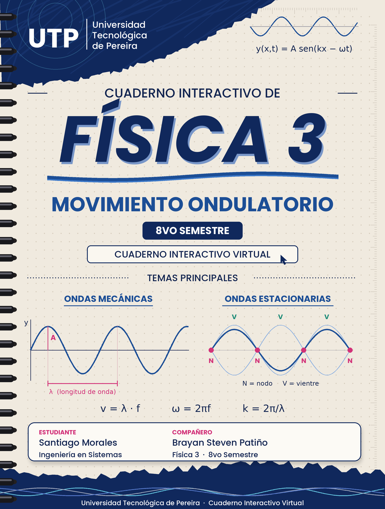

Índice General de Contenidos
Guía de navegación secuencial y organización pedagógica
🎯 Presentación del Cuaderno
El presente cuaderno interactivo constituye una obra virtual de ingeniería didáctica desarrollada para el curso de Física 3 en la Universidad Tecnológica de Pereira (UTP). Su propósito es abordar con máximo rigor físico, precisión matemática y excelencia visual los fenómenos del Movimiento Ondulatorio y el Principio de Superposición de Ondas.
| Pág. | Sección / Módulo Temático | Contenido Clave & Recursos Interactivos |
|---|---|---|
| Pág. 1 | Índice General y Presentación | Estructura secuencial, convenciones y objetivos pedagógicos. |
| Pág. 2 | Mapa Mental Conceptual | Red conceptual interactiva de ondas, superposición y propagación. |
| Pág. 3 | Línea de Tiempo Histórica | De Huygens (1678) a Hertz (1888): descubrimientos clave de la física ondulatoria. |
| Pág. 4 | Conceptos y Definiciones Fundamentales | Longitud de onda, frecuencia, velocidad de propagación, frente de onda. |
| Pág. 5 | Ecuación de Onda y Derivación | Ecuación diferencial de onda, solución general, ondas sinusoidales. |
| Pág. 6 | Principio de Superposición | Superposición lineal, interferencia constructiva y destructiva, batidos. |
| Pág. 7 | Laboratorio Virtual Interactivo | Simulador de ondas estilo GeoGebra, teclado virtual, paleta de estilos, ventana modal. |
| Pág. 8 | Ejercicios Resueltos | Datos (azul), incógnitas (rojo), resultados (naranja), validación (verde). |
| Pág. 9 | Glosario Científico | Términos, símbolos, unidades SI y buscador dinámico. |
| Pág. 10 | Referencias Bibliográficas (APA 7) | Bibliografía universitaria con normas APA 7. |
Mapa Mental Conceptual — Movimiento Ondulatorio
Interconexión de conceptos, ecuaciones y fenómenos ondulatorios
- Mecánicas / Electromagnéticas
- Transversales / Longitudinales
- Progresivas / Estacionarias
- Planas / Esféricas / Cilíndricas
- Amplitud $A$ [m]
- Longitud de onda $\lambda$ [m]
- Período $T$ [s] / Frecuencia $f$ [Hz]
- Número de onda $k = 2\pi/\lambda$
- $\frac{\partial^2 y}{\partial t^2} = v^2 \frac{\partial^2 y}{\partial x^2}$
- $y(x,t) = A\sen(kx - \omega t)$
- $v = \lambda \cdot f = \omega / k$
- Velocidad de fase / grupo
- Principio de superposición lineal
- Interferencia constructiva/destructiva
- Batidos $f_{bat} = |f_1 - f_2|$
- Ondas estacionarias, nodos, antinodos
Línea de Tiempo y Reseña Histórica
Hitos cronológicos en el descubrimiento de la naturaleza ondulatoria de la luz y el sonido
📜 Reseña Histórica: De Huygens a Einstein
La comprensión del movimiento ondulatorio ha recorrido siglos de observación, controversia y síntesis matemática. En 1678, Christiaan Huygens propuso el principio que lleva su nombre: cada punto de un frente de onda actúa como fuente de ondas secundarias, explicando la reflexión y refracción de la luz. Décadas después, Thomas Young (1801) demostró experimentalmente la interferencia de la luz al hacer pasar un haz luminoso por dos rendijas, confirmando su naturaleza ondulatoria. Augustin-Jean Fresnel complementó este trabajo con la teoría ondulatoria completa de la difracción. Finalmente, James Clerk Maxwell (1865) unificó electricidad y magnetismo, prediciendo las ondas electromagnéticas que Heinrich Hertz confirmó experimentalmente en 1888.
Conceptos y Definiciones Fundamentales
Parámetros cinemáticos y magnitudes en el Sistema Internacional de Medidas
1. Definición de Onda
Una onda es una perturbación que se propaga por un medio (o el vacío) transportando energía sin transportar materia. Matemáticamente, una onda unidimensional satisface la condición de que su perfil espacial avanza en el tiempo:
2. Parámetros de la Onda Sinusoidal
La onda sinusoidal progresiva es la solución más general de la ecuación de onda lineal:
| Magnitud | Símbolo | Definición | Unidad SI |
|---|---|---|---|
| Amplitud | $A$ | Desplazamiento máximo respecto al equilibrio | m |
| Número de onda | $k$ | $k = \dfrac{2\pi}{\lambda}$ | rad/m |
| Frecuencia angular | $\omega$ | $\omega = 2\pi f = \dfrac{2\pi}{T}$ | rad/s |
| Longitud de onda | $\lambda$ | Distancia espacial de un ciclo completo | m |
| Período | $T$ | Tiempo de un ciclo completo | s |
| Frecuencia | $f$ | $f = 1/T$ ciclos por segundo | Hz |
| Velocidad de fase | $v$ | $v = \dfrac{\omega}{k} = \lambda f$ | m/s |
| Fase inicial | $\varphi_0$ | Desplazamiento de fase en $t=0,\, x=0$ | rad |
Ecuación de Onda y Derivación
Deducción de la ecuación diferencial de ondas y análisis de sus soluciones
1. Ecuación Diferencial de Onda
La ecuación de onda lineal unidimensional es una ecuación diferencial en derivadas parciales que describe la propagación de perturbaciones en medios lineales:
donde $v$ es la velocidad de propagación de la onda en el medio.
2. Verificación de la Solución Sinusoidal
Se propone la solución general $y(x,t) = A\,\text{sen}(kx - \omega t)$. Derivando dos veces:
Sustituyendo en la ecuación de onda: $-\omega^2 = v^2(-k^2)$, por lo tanto:
3. Energía de una Onda
La densidad de energía por unidad de longitud en una onda mecánica sinusoidal es:
y la potencia promedio transmitida es $P = \dfrac{1}{2}\mu v \omega^2 A^2$, proporcional al cuadrado de la amplitud.
Principio de Superposición
Interferencia, batidos y formación de ondas estacionarias
🎯 Enunciado del Principio
El principio de superposición establece que cuando dos o más ondas coinciden en un punto del espacio, el desplazamiento resultante es la suma algebraica de los desplazamientos individuales:
Este principio es válido mientras el medio sea lineal (la respuesta es proporcional a la perturbación).
⚡ Interferencia Constructiva y Destructiva
Para dos ondas sinusoidales de la misma frecuencia y amplitud que viajan en la misma dirección con diferencia de fase $\Delta\varphi$:
🎵 Batidos
Cuando dos ondas de frecuencias cercanas $f_1$ y $f_2$ se superponen, se producen variaciones periódicas de amplitud llamadas batidos:
- ¿Qué ocurre cuando dos pulsos idénticos se encuentran? ¿Y si tienen signos opuestos?
- ¿La amplitud de la onda resultante puede ser mayor que cualquiera de las componentes?
- Si ocultas una onda del gráfico, ¿la resultante cambia? ¿Y si la excluyes de la suma?
- ¿En qué posición $x$ es máxima la resultante en este instante $t$?
- ¿Cómo cambia la resultante si aumentas la frecuencia de una de las ondas?
Simulador Interactivo de Ondas
Plano cartesiano estilo GeoGebra · Principio de superposición · Tiempo real
Ejercicios Resueltos con Protocolo de Color
Datos (azul) · Incógnitas (rojo) · Resultados (naranja) · Validación (verde)
Ej. 1. Velocidad de Propagación
Una onda sonora en el aire tiene frecuencia $f = 440\,\text{Hz}$ y longitud de onda $\lambda = 78.2\,\text{cm}$. Calcule la velocidad de propagación.
Ej. 2. Superposición de dos ondas con diferencia de fase
Dos ondas de la misma amplitud $A = 3\,\text{m}$ y frecuencia se superponen con diferencia de fase $\Delta\varphi = \pi/3$. Calcule la amplitud resultante.
Glosario Científico Ilustrado
Términos, símbolos, unidades SI y definiciones del Movimiento Ondulatorio
Referencias Bibliográficas
Normas APA 7 — Física Ondulatoria y Recursos Universitarios
Serway, R. A., & Jewett, J. W. (2018). Física para Ciencias e Ingeniería (9.ª ed.). Cengage Learning. https://www.cengage.com
Texto universitario principalHalliday, D., Resnick, R., & Krane, K. S. (2014). Física (Vol. 2, 5.ª ed. en español). Compañía Editorial Continental.
Referencia complementariaFrench, A. P. (1971). Vibrations and Waves. W.W. Norton & Company. (MIT Introductory Physics Series)
Texto clásico avanzadoCrawford, F. S. (1968). Ondas (Berkeley Physics Course, Vol. 3). Reverté.
Curso Berkeley — Texto canónicoKaTeX (2024). KaTeX — Fast Math Typesetting for the Web (v0.16.9) [Software]. Khan Academy. https://katex.org
Dependencia de software